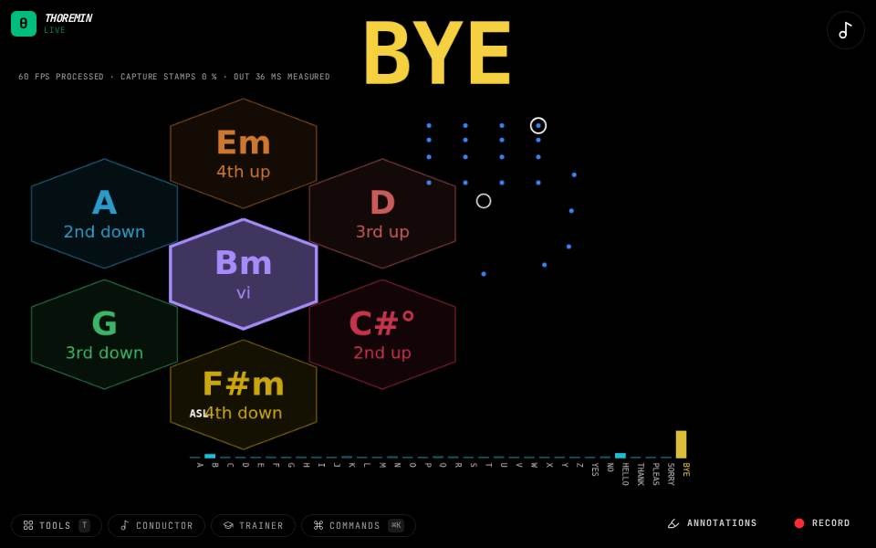

Instruments › Sign instruments
Sign Wheel

What to do
- Fingerspell a letter from A to G and hold it a moment.
- The wheel turns to that letter's chord in the key, and its wedges show the chords one move away.
- Spell the next letter to go on; your hand does not need to rest in between.
The chord wheel, steered by your letters instead of your pushes. In D major, F goes to F-sharp minor and C to C-sharp diminished, because the key's accidentals apply. Watching the wedges as you spell shows which move each letter was from the last chord: a fourth up, a third down.
How it works
The sign reader names your letter. A letter held for a few readings goes to its chord, and the chords are voice-led, so each one moves as little as it can from the one before. Signs that are not A to G change nothing. A letter is taken after about six readings in a row (a fifth of a second). The key is in Sound; how the chord sounds is in Face, once you set the face to chord; the wheel's own settings are in Chord wheel. Spelling needs Sign language on, which this instrument turns on.
Its settings: Chord wheel, Sign language, Sound, Face. Every knob: the manual.